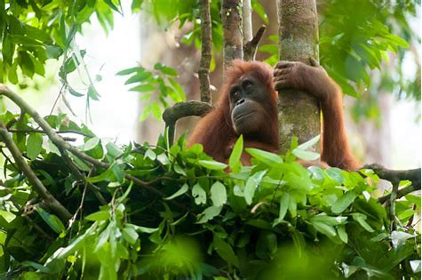
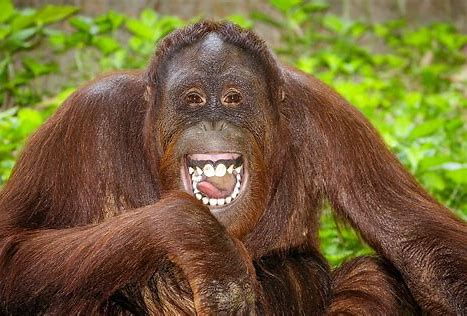

Orangutans are great apes known for their intelligence and distinct orange fur. Found in the rainforests of Borneo and Sumatra, they are the largest tree-dwelling mammals.
These gentle creatures spend most of their time in trees, building nests from leaves and branches. Unfortunately, their population is declining due to habitat destruction and poaching.
 | Fact | Detail |
|---|---|
| Scientific Name | Pongo pygmaeus (Borneo) / Pongo abelii (Sumatra) |
| Habitat | Tropical rainforests |
| Diet | Fruits, leaves, insects |
| Population | Critically endangered |
| Behavior | Primarily solitary, except mothers with offspring |